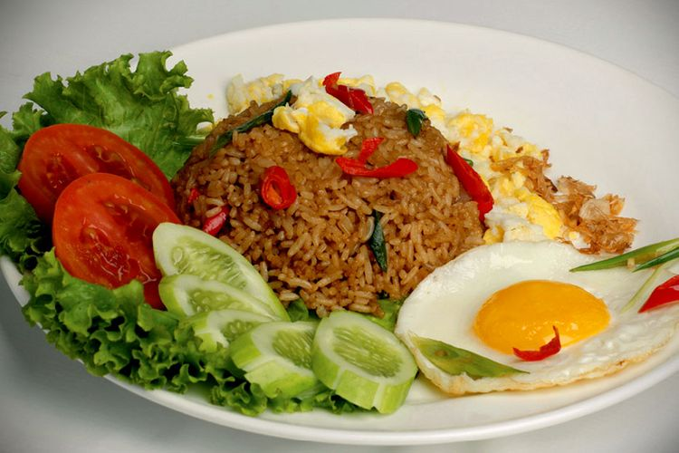
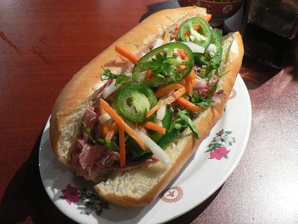
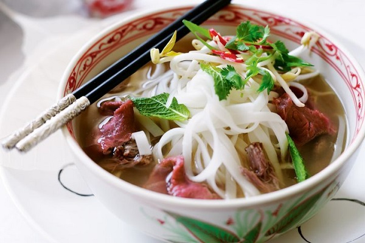
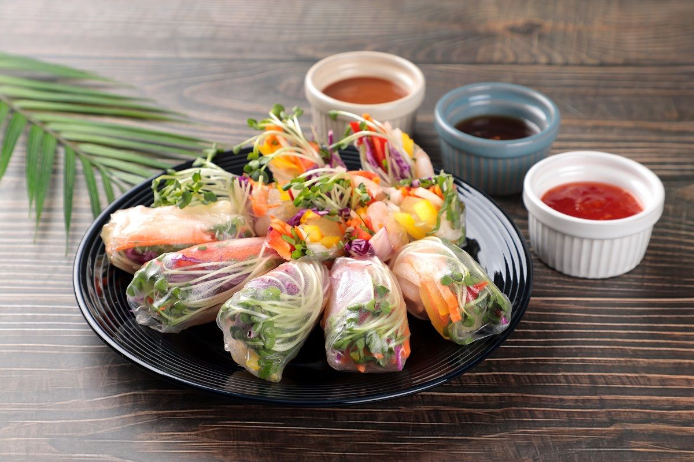

재료
쌀, 식용유, 샬롯, 마늘, 고추, 뜨라시, 닭고기, 새우, 달걀, 토마토 케첩, 크찹 마니스, 삼발 등
01. 먼저 냄비에 물과 쌀을 넣고 밥을 짓는다. 완성된 밥은 수분이 증발하여 살짝 꼬들꼬들해지도록 식혀 사용하거나 만든 지 하루 정도 지난 밥을 사용한다.
02. 옴폭한 프라이팬에 식용유를 두른 후 뜨겁게 달군다. 달걀을 얇게 펼쳐 부치고 불에서 내려 지단처럼 얇게 썰어둔다.
03. 이어서 샬롯(shallot), 마늘, 고추의 맛과 향이 배어 나오도록 볶다가 뜨라시를 넣고 함께 볶아 준다. 닭고기 등의 동물성 재료를 추가하여 볶는다.
04. 다음으로 토마토 케첩, 크찹 마니스, 삼발을 넣고 재료에 소스의 맛이 배도록 섞는다.
05. 다음으로 식은 밥을 넣고 밥에 소스의 붉은색이 고르게 밸 때까지 볶는다.
06. 여기에 기호에 따라 설탕, 타마린드(tamarind) 즙을 첨가해 각각 달콤함과 톡 쏘는 새콤한 맛을 더하기도 한다. 완성된 볶음밥 위에 바왕 고렝, 달걀 지단을 올려 장식한다.
닫기
똠양꿍 페이스트, 물2 컵
새우 5~6마리
양파 1/4
양송이 버섯 7~8개
청경채 한 줌 , 고수, 라임파우더
물 두 컵에 페이스트를 넣고 끟임
새우 양파 버섯 청경채 먼저 익혀야 하는 순으로 재료 투하
마지막으로 고수를 올려 내면 끝납니다
닫기
재료
바게트, 마요네즈, 돼지고기, 햄, 고수
1. 따뜻하게 데운 베트남식 바게트를 반으로 갈라 마요네즈를 바르고 파테와 햄, 머리 고기, 소시지, 달걀 구이 등을 넣고 오이 등 신선한 채소와 고수 같은 허브를 더한다.
2. 여기에 새콤달콤한 맛의 무절임이나 당근절임을 넣고 느억맘(nước mắm, 생선 소스), 칠리 소스, 간장을 뿌리기도 한다. 속 재료와 소스는 취향에 따라 가감할 수 있다.
닫기
주재료 : 소프트쉘크랩, 코코넛 밀크, 카레 가루
01. 마늘은 다지고, 양파는 슬라이스한다. 파는 작게 잘라 놓는다.
02. 소프트쉘크랩은 깨끗이 씻어 밀가루를 묻혀 황금빛을 띠는 갈색이 될 때까지 바삭하게 튀겨준다.
03. 또 다른 팬에 오일을 두르고 양파, 마늘을 넣어 볶아준다.
04. 여기에 약간의 치킨 스톡을 넣어준다.
05. 커리 파우더, 코코넛 밀크, 파를 넣어 조리다가 연유, 남쁠라를 넣어 섞는다. 잘 풀어둔 달걀을 넣고 스크램블 하듯 휘저으며 볶아 커리를 완성한다.
06. 접시에 커리를 담고 그 위에 소프트쉘크랩을 올린다. 여기에 타이 홈 말리 라이스로 지은 밥을 곁들이고, 남쁠라에 다진 고추를 넣어 만든 소스를 함께 내어 먹는다.
닫기
· 주재료 : 마른 쌀국수 160g, 물 10컵, 조미양념가루 4큰술, 숙주 200g, 청양 고추 1개, 홍 고추 1개, 대파 1대, 칠리소스 약간, 고수 약간, 레몬즙 약간, 후춧가루 약간
· 부재료 : 양파(양파 초절임) 1개, 소금 2작은술, 식초 4큰술, 설탕 2큰술, 물 6큰술
· 재료설명 : 양파 초절임 (양파 1개)
01. 양파는 채 썰어 소금, 식초, 설탕, 물을 넣고 30분 정도 절여 물기를 뺍니다.
02. 숙주는 머리와 꼬리를 떼고 씻어 물기를 빼고 청양고추와 홍고추, 대파는 송송 썹니다.
03. 쌀국수는 찬물에 30분 정도 담가두었다 끓는 물에 30초만 삶아 찬물에 헹궈 건집니다.
04. 물을 팔팔 끓이다 조미양념가루로 맛을 냅니다.
05. 그릇에 쌀국수를 1인분씩 담고 숙주, 절인 양파, 고수를 얹은 다음 뜨거운 쇠고기 육수를 붓습니다.
06. 칠리소스와 레몬즙을 곁들여 함께 먹으면 훨씬 맛있게 즐길 수 있습니다.
닫기
주재료 : 라이스페이퍼 12장, 새우(중하) 6마리(120g), 쇠고기(샤브샤브용) 200g, 파인애플(슬라이스 된 것) 2개(200g), 숙주 2줌(100g), 고수 10줄기(20g),
양상추(손바닥크기) 2장(30g), 깻잎 5장(10g), 당근 1/3개(60g), 오이 1/3개(60g), 가는쌀국수(버미셀리) 2줌(100g)
· 부재료 : 고기양념(간장 1큰술(15ml), 청주 1큰술(15ml), 매실청 1큰술(15ml), 후추(후춧가루 약간)), 피시소스(피시소스 3큰술(45ml), 레몬즙 1큰술(15ml), 파인애플즙
1큰술(15ml), 홍고추(홍고추 1/2개분 다진것) 5g, 청양고추(청양고추 1개분 다진것) 10g, 마늘(다진 마늘) 1작은술(3g), 설탕 1큰술(10g)), 땅콩 소스(땅콩버터 3큰술(30g),
꿀 1큰술(10g), 피시소스 1작은술(5ml), 간장 1작은술(5ml))
01. 볼에 쇠고기 양념 재료를 넣고 골고루 섞은 후 쇠고기를 넣고 버무려 재운다.
02. 새우는 머리, 꼬리, 내장, 껍질을 제거한 후 끓는 소금물에 1분간 데친 후 체에 밭쳐 물기를 뺀다.
03. 오이는 돌려 깎아 가늘게 채 썰고, 당근도 가늘게 채 썬다.
04. 양상추는 깨끗이 씻은 후 물기를 완전히 제거한 후 깻잎은 돌돌 말아 가늘게 채 썬다.
05. 고수와 숙주는 깨끗이 씻은 후 체에 밭쳐 물기를 뺀다.(취향에 따라 고수는 가감한다.)
06. 파인애플은 1cm 폭으로 썬다.
07. 쌀국수는 찬물에 담가 두었다가 끓는 물에 30초간 데친 후 찬물에 바로 헹궈 물기를 뺀다.
08. 볼에 피시소스 재료를 넣고 골고루 섞는다.(피시소스가 없을 경우 까나리 액젓으로 대체해도 된다.)
09. 볼에 땅콩 소스 재료를 넣고 골고루 섞는다.
10. 달군 팬에 쇠고기를 넣고 굽는다.
11. 라이스페이퍼를 따뜻한 물에 10초간 담갔다가 건져 도마나 접시 위에 펼친다. 그 위에 쇠고기, 새우, 버미셀리, 오이, 당근, 양상추, 깻잎, 숙주, 고수, 파인애플을 취향대로 올린다.
라이스페이퍼 양면을 접어 붙여 고정한 뒤 아랫면을 잡고 단단하게 만다. 피시소스나 땅콩소스를 곁들인다.
닫기
· 주재료 : 만두피 16장, 칵테일 새우 10마리, 돼지고기(다진 것) 200g, 숙주 50g, 부추 50g, 소금 약간, 후춧가루 약간
01. 칵테일 새우는 끓는 물에 살짝 데친 뒤 꼬리를 떼어내고 잘게 다져주세요.
02. 숙주와 부추는 1cm 정도의 길이로 잘라줍니다.
03. 볼에 다진 돼지고기와 칵테일 새우, 숙주, 부추를 넣고 소금, 후춧가루를 넣어 밑간한 후 잘 치대 주세요.
04. 만두피 위에 적당한 크기로 소를 채워 길고 동그랗게 말아줍니다. 만두피 끝에 물이나 달걀흰자를 살짝 바르면 잘 말아져요.
05. 뜨겁게 달궈진 기름에 만두피를 바삭하게 2번 튀겨 내 느억맘소스나 땅콩소스에 찍어 드세요.
닫기
새우 200G
돼지비계 100g
고수 뿌리 1~2개 (옵션)
후추, 소금, 간장, 설탕, 빵가루, 밀가루, 달걀 1개
새우 껍질을 모두 벗겨내고 내장을 제거한 후, 칼등 등으로 가볍게 눌러 살을 뽀개준다
돼지 비계도 가능한 작게 썰어주시구요~
뽀갠 새우중 1/34정도를 덜어 내어 썰어준다 새우와 돼지비계를 갈건데, 다 갈아버리면 씹히는 맛이 없으니까
작게 썰었다가 마지막에 서깨어줄겁니다,
푸드 프로세서에 새우의 2/3, 돼지비계, 고수뿌리, 마늘을 넣고 아주아주 크리미한 느낌이 될 때까지 갈아주세요~
진간장 1 밥숟가락
소금 1/2 찻숟가락
설탕 1/2 찻숟가락
후추 세게 톡톡톡
그리고 나머지를 다 넣고 만든다
닫기

나시고렝
일반적인 볶음밥과 달리 많은 소스가 들어가서 다양한 맛을 느낄 수 있는 인도네시아식 볶음밥 요리이다
똠양꿍
세계 3대 수프 중 하나로 여러 채소와 새우를 넣어 매콤하게 만든 수프 요리이다

반미
베트남식 바게트를 반으로 가르고 버터와 소스를 바르고 고기와 채소 등 속재료를 넣어 만든 샌드위치 요리이다
뿌 팟 봉커리
소프트쉘크랩을 튀겨서 카레 가루와 코코넛 밀크를 첨가한 태국의 대표적인 커리 요리이다

베트남 쌀국수
쌀로 만든 면을 삶아내서 닭육수나 소육수를 붓고 여러 야채와 고기를 넣고 먹는 면 요리이다

월남쌈
여러가지 채소들과 새우, 고기를 쌀로 만든 라이스 페이퍼에 싸서 전용 소스에 찍어먹는 요리이다